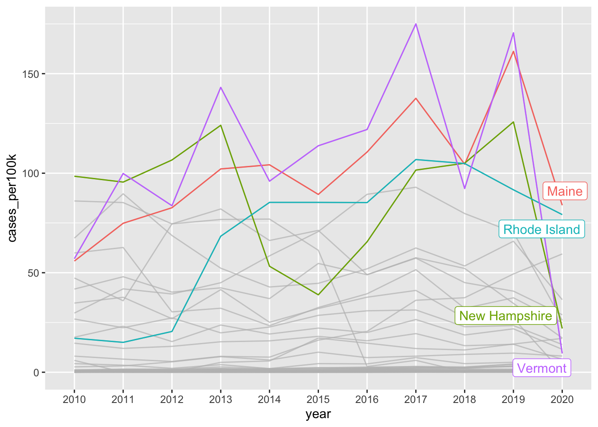

##~~~~~~~~~~~~~~~~~~~~~~~~~~~~~~~~~~~~~~~~~~~~~~~~~~~~~~~~~~~~~~~~~~~~~~~~~~~~~~
## setup ----
##~~~~~~~~~~~~~~~~~~~~~~~~~~~~~~~~~~~~~~~~~~~~~~~~~~~~~~~~~~~~~~~~~~~~~~~~~~~~~~
#.........................load libraries.........................
library(tidycensus)
library(tidyverse)
library(gghighlight)
#..........................import data...........................
lyme <- read_csv(here::here("week2", "data", "Lyme_Disease_Cases_by_State_or_Locality.csv"))
##~~~~~~~~~~~~~~~~~~~~~~~~~~~~~~~~~~~~~~~~~~~~~~~~~~~~~~~~~~~~~~~~~~~~~~~~~~~~~~
## wrangle lyme disease data ----
##~~~~~~~~~~~~~~~~~~~~~~~~~~~~~~~~~~~~~~~~~~~~~~~~~~~~~~~~~~~~~~~~~~~~~~~~~~~~~~
#....................wrangle lyme disease data...................
lyme_clean <- lyme |>
rename(state = State) |>
# remove special character from State names that have it ----
mutate(state = str_replace(string = state, pattern = "\x86", replacement = "")) |>
# remove total cases row ----
filter(state != "U.S. Total") |>
# wide to long (tidy) years ----
pivot_longer(cols = 2:16, names_to = "year", values_to = "reported_cases") |>
# reorder columns ----
relocate(year, state, reported_cases) |>
# filter for years 2010 - 2020 ----
filter(year %in% c(2010:2020))
##~~~~~~~~~~~~~~~~~~~~~~~~~~~~~~~~~~~~~~~~~~~~~~~~~~~~~~~~~~~~~~~~~~~~~~~~~~~~~~
## get & wrangle census data ----
##~~~~~~~~~~~~~~~~~~~~~~~~~~~~~~~~~~~~~~~~~~~~~~~~~~~~~~~~~~~~~~~~~~~~~~~~~~~~~~
#........get pop estimates by state using tidycensus API.........
us_state_pop <- get_estimates(geography = "state",
product = "population",
state = NULL,
year = 2019) |> # request 2019 vintage for the 2010s (see documentation)
filter(variable == "POP") |>
select(state = NAME, population = value) |>
filter(state != "Puerto Rico")
#........................write data to csv.......................
# OPTIONAL, but recommended in case you want to work offline, the API is down, etc. (you can then read in your saved data file rather than run the above code)
# write_csv(us_state_pop, file = here::here("week2", "data", "us_state_pop.csv"))
##~~~~~~~~~~~~~~~~~~~~~~~~~~~~~~~~~~~~~~~~~~~~~~~~~~~~~~~~~~~~~~~~~~~~~~~~~~~~~~
## join lyme & pop dfs ----
##~~~~~~~~~~~~~~~~~~~~~~~~~~~~~~~~~~~~~~~~~~~~~~~~~~~~~~~~~~~~~~~~~~~~~~~~~~~~~~
lyme_pop <- left_join(lyme_clean, us_state_pop) |>
# add col with num of 100k people per state ----
mutate(pop100k = population/100000) |>
# calculate num cases per 100k people (common way of reporting disease incidence) ----
mutate(cases_per100k = reported_cases/pop100k)
Note
This template follows lecture 2.3 slides. Please be sure to cross-reference the slides, which contain important information and additional context!
Setup
Line graphs
- show evolution of one or more numeric variables; similar to scatter plots but points are ordered (typically by x-axis value) and joined with straight line segments
# line chart ----
ggplot(lyme_pop, aes(x = year, y = cases_per100k, group = state)) +
geom_line() +
geom_point()Alt 1: Avoid spaghetti plots
# highlight one group ----
ggplot(lyme_pop, aes(x = year, y = cases_per100k, group = state)) +
geom_line() +
gghighlight::gghighlight(state == "New Jersey") # highlight based on criteria ----
ggplot(lyme_pop, aes(x = year, y = cases_per100k, group = state, color = state)) +
geom_line() +
gghighlight::gghighlight(max(cases_per100k) > 100) 
Note 1: It’s okay to cut the y-axis
# ggplot cuts y-axis by default ----
lyme_pop |>
filter(year %in% c(2013:2019)) |>
filter(state == "Vermont") |>
ggplot(aes(x = year, y = cases_per100k, group = state)) +
geom_line()
# force y-axis origin at 0 ----
lyme_pop |>
filter(year %in% c(2013:2019)) |>
filter(state == "Vermont") |>
ggplot(aes(x = year, y = cases_per100k, group = state)) +
geom_line() +
scale_y_continuous(limits = c(0, NA))Note 2: Consider aspect ratio
- here, 10 units on our x-axis (years 2010 - 2020), and ~175 units (case_per100k 0 to ~175) on our y-axis
- ggplot automatically adjusts aspect ratio so that plot is easier to read
# default aspect ratio (with added tick marks) ----
lyme_pop |>
filter(state == "Vermont") |>
ggplot(aes(x = year, y = cases_per100k, group = state)) +
geom_line() +
scale_y_continuous(breaks = seq(0, 190, by = 1)) - we can fix the aspect ratio of our plot
ratiois expressed asy / xand is set to1by default (see grid lines)
# fixed aspect ratio ----
lyme_pop |>
filter(state == "Vermont") |>
ggplot(aes(x = year, y = cases_per100k, group = state)) +
geom_line() +
scale_y_continuous(breaks = seq(0, 190, by = 1)) +
coord_fixed(ratio = 1)- ratios > 1: units on the y-axis longer than units on the x-axis (resulting in steeper slopes)
- ratios < 1: units on the x-axis longer than units on the y-axis (resulting in shallower slopes)
Area charts
- similar to line chart; indicates change in a numeric variable through time, but the space between x-axis and line is shaded in
# area chart of lyme disease incidence in NJ ----
lyme_pop |>
filter(state == "New Jersey") |>
ggplot(aes(x = year, y = cases_per100k, group = state, fill = state)) +
geom_area() +
scale_fill_manual(values = c("#047C90")) +
scale_x_discrete(expand = c(0, 0)) +
scale_y_continuous(expand = c(0, 0)) +
theme(legend.position = "none")Stacked area charts
- show evolution of the whole + relative proportions of each group
# stacked area chart ----
lyme_pop |>
filter(state %in% c("Maine", "Rhode Island", "New Hampshire", "Vermont")) |>
ggplot(aes(x = year, y = cases_per100k, group = state, fill = state)) +
geom_area()
Alt 1: proportional stacked area chart
- plot percentage contributions rather than absolute numbers on y-axis
Note 1: stacked area charts aren’t great for looking at evolution of individual groups
# stacked area chart ----
lyme_pop |>
filter(state %in% c("Maine", "Rhode Island", "New Hampshire", "Vermont")) |>
ggplot(aes(x = year, y = cases_per100k, group = state, fill = state)) +
geom_area()
# same data, but as a line chart & faceted by state ----
lyme_pop |>
filter(state %in% c("Maine", "Rhode Island", "New Hampshire", "Vermont")) |>
ggplot(aes(x = year, y = cases_per100k, group = state, color = state)) +
geom_line() +
facet_wrap(~state)